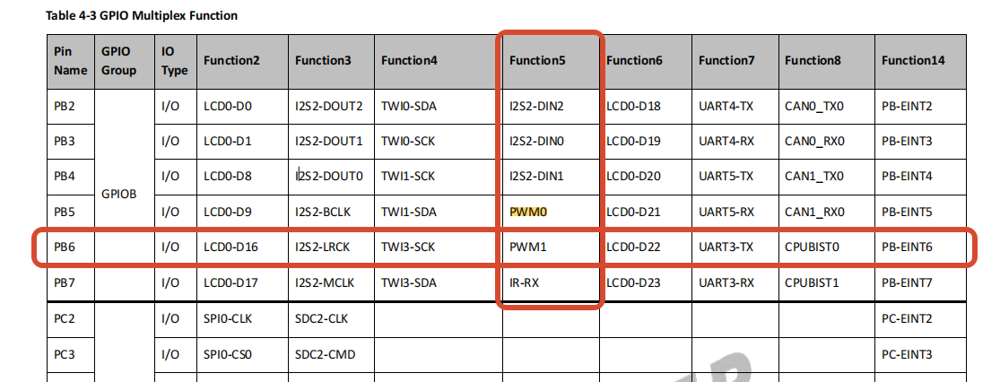

<!DOCTYPE lake>
<h2 data-lake-id="azaVM" id="azaVM"><span data-lake-id="u75777da2" id="u75777da2">核心流程</span></h2><h3 data-lake-id="508a343c" id="508a343c"><span data-lake-id="u8ada5643" id="u8ada5643">核心概念导入：告别死板，我们要“半开半合”</span></h3><p data-lake-id="ub29fb036" id="ub29fb036"><strong><span data-lake-id="uf93206fe" id="uf93206fe">【痛点引入：GPIO 的局限性】</span></strong><span data-lake-id="u1a43bfc6" id="u1a43bfc6"> 昨天我们学了 GPIO，它就像家里的普通电灯开关，只有两个状态：要么全亮（1），要么全灭（0）。 但是，如果我们要给机器人做个“会变暗的呼吸灯”，或者要控制机器人的轮子“以 30% 的速度慢慢转”，GPIO 就彻底傻眼了。我们不能让机器人只有“停”和“全速冲刺”两个状态。我们需要一个“无级变速旋钮”。</span></p><p data-lake-id="uaa72c9b8" id="uaa72c9b8"><strong><span data-lake-id="ub52180aa" id="ub52180aa">【类比教学：用“瞎糊弄”的艺术理解 PWM】</span></strong><span data-lake-id="u37a7ee6b" id="u37a7ee6b"> 这怎么实现呢？Linux 引入了 PWM（脉冲宽度调制）子系统。</span></p><p data-lake-id="u43fa383c" id="u43fa383c"><span data-lake-id="ufe6519fe" id="ufe6519fe">大家想象一下，如果你一秒钟之内，把电灯开关疯狂地打开、关上 100 次，而且每次打开的时间只有一点点，关上的时间很长。你的肉眼根本看不出灯在闪，只会觉得：</span><strong><span data-lake-id="u45a451e6" id="u45a451e6">“这盏灯变暗了！”</span></strong><span data-lake-id="u8d310fa7" id="u8d310fa7"> 这就是 PWM 的核心魔法：</span><strong><span data-lake-id="ub05f9632" id="ub05f9632">用极高频的数字开关，骗过物理世界，模拟出模拟信号（电压高低）的效果。</span></strong></p><p data-lake-id="u973b6dbe" id="u973b6dbe"><strong><span data-lake-id="ud4f28386" id="ud4f28386">【三大核心名词降维解释】</span></strong><span data-lake-id="u514a4b3d" id="u514a4b3d"> 在 Linux 里敲命令前，必须搞懂这三个词（注意，Linux 极其精准，它的时间单位是</span><strong><span data-lake-id="u74a1685d" id="u74a1685d">纳秒 ns</span></strong><span data-lake-id="u6a489d01" id="u6a489d01">，1秒 = 1,000,000,000 纳秒）：</span></p><ol list="u22aa2872"><li data-lake-id="ud6af2176" fid="udf795a4a" id="ud6af2176"><strong><span data-lake-id="u1629cb62" id="u1629cb62">频率与周期 (Period)：</span></strong></li></ol><ul data-lake-indent="1" list="u1e28aec4"><li data-lake-id="uf91a7446" fid="uabb2c72e" id="uf91a7446"><strong><span data-lake-id="u3b1d5fbf" id="u3b1d5fbf">大白话：</span></strong><span data-lake-id="u3ec01847" id="u3ec01847"> 你每秒钟按多少次开关。</span></li><li data-lake-id="uae750000" fid="uabb2c72e" id="uae750000"><strong><span data-lake-id="u6e409a76" id="u6e409a76">计算：</span></strong><span data-lake-id="ua8b89500" id="ua8b89500"> 如果是 100Hz（一秒闪 100 次），那按一次开关的完整时间（周期）就是 10,000,000 纳秒。在 Linux 里，我们主要设置 </span><code data-lake-id="ub0398de9" id="ub0398de9"><span data-lake-id="ucb9ab683" id="ucb9ab683">period</span></code><span data-lake-id="u88f3e8dd" id="u88f3e8dd">（周期）。</span></li></ul><ol list="u22aa2872" start="2"><li data-lake-id="udcd69eb5" fid="udf795a4a" id="udcd69eb5"><strong><span data-lake-id="u92343a92" id="u92343a92">占空比 (Duty Cycle)：</span></strong></li></ol><ul data-lake-indent="1" list="ubf03927a"><li data-lake-id="udb8bb8ee" fid="u6b9ff044" id="udb8bb8ee"><strong><span data-lake-id="u37912be0" id="u37912be0">大白话：</span></strong><span data-lake-id="u1bfa2c15" id="u1bfa2c15"> 在你按开关的这一次完整动作里，</span><strong><span data-lake-id="u3b0d5621" id="u3b0d5621">通电的时间占了多久？</span></strong></li><li data-lake-id="u5f5687a8" fid="u6b9ff044" id="u5f5687a8"><strong><span data-lake-id="u72efe119" id="u72efe119">类比：</span></strong><span data-lake-id="u4cc0d7e9" id="u4cc0d7e9"> 周期是 10 秒，你开灯 5 秒，关灯 5 秒，占空比就是 50%（半亮）。你开灯 2 秒，关灯 8 秒，占空比就是 20%（很暗）。</span></li></ul><ol list="u22aa2872" start="3"><li data-lake-id="u6f1a9d97" fid="udf795a4a" id="u6f1a9d97"><strong><span data-lake-id="uc7084d95" id="uc7084d95">极性 (Polarity)：</span></strong></li></ol><ul data-lake-indent="1" list="uca5828f0"><li data-lake-id="u369e47e8" fid="ubadf2b30" id="u369e47e8"><strong><span data-lake-id="u028c6c11" id="u028c6c11">大白话：</span></strong><span data-lake-id="u77f172b4" id="u77f172b4"> 逻辑反转。</span><code data-lake-id="u9a47afc7" id="u9a47afc7"><span data-lake-id="u772abcb3" id="u772abcb3">normal</span></code><span data-lake-id="u0fa09034" id="u0fa09034"> 就是高电平有效，</span><code data-lake-id="uca0cf3e6" id="uca0cf3e6"><span data-lake-id="ua9a22325" id="ua9a22325">inverted</span></code><span data-lake-id="u83b06536" id="u83b06536"> 就是反过来。一般我们用 </span><code data-lake-id="uecc007be" id="uecc007be"><span data-lake-id="u04951e09" id="u04951e09">normal</span></code><span data-lake-id="ucf4a0c83" id="ucf4a0c83">。</span></li></ul><hr/><h3 data-lake-id="54cb47e9" id="54cb47e9"><span data-lake-id="u7f133cb5" id="u7f133cb5">🛠️</span><span data-lake-id="u13474c0e" id="u13474c0e"> 实战演练 1：打通 PWM 神经（修改设备树）</span></h3><p data-lake-id="uad021deb" id="uad021deb"><strong><span data-lake-id="u86447022" id="u86447022">【痛点与动作】</span></strong><span data-lake-id="u3192c2f5" id="u3192c2f5"> 系统默认可能把 PF4 这个引脚当成了普通的 GPIO，我们需要在设备树（高级注册表）里，把它重新定义为 PWM 功能。</span></p><p data-lake-id="udbb59eb3" id="udbb59eb3"><strong><span data-lake-id="udb305bc7" id="udb305bc7">【操作步骤】</span></strong><span data-lake-id="ud476ee36" id="ud476ee36"> 打开 Ubuntu 里的设备树文件，找到 </span><code data-lake-id="u2d4019cb" id="u2d4019cb"><span data-lake-id="ubeb2464c" id="ubeb2464c">pwm6</span></code><span data-lake-id="u2f76f1c3" id="u2f76f1c3"> 节点，告诉学生不需要死记硬背，直接“填表”：</span></p><p data-lake-id="u1d5059d9" id="u1d5059d9"><span data-lake-id="u6089b2fd" id="u6089b2fd">代码段</span></p><p data-lake-id="ub2945e7d" id="ub2945e7d"><span data-lake-id="u47152c12" id="u47152c12">打开设备树: </span><code data-lake-id="ub6b9f048" id="ub6b9f048"><span data-lake-id="ue6f27d71" id="ue6f27d71">device/config/chips/t113/configs/evb1_auto/board.dts</span></code></p><p data-lake-id="u5970b78c" id="u5970b78c"><span class="lake-fontsize-12" data-lake-id="ua5cdf510" id="ua5cdf510" style="color: rgb(15, 17, 21)">这里一定要记得把 </span><code data-lake-id="u42f99332" id="u42f99332"><span class="lake-fontsize-12" data-lake-id="u3f72bbe7" id="u3f72bbe7" style="color: rgb(15, 17, 21)">pinctrl-names</span></code><span class="lake-fontsize-12" data-lake-id="uedb67dd7" id="uedb67dd7" style="color: rgb(15, 17, 21)"> 里的默认的</span><code data-lake-id="u34215684" id="u34215684"><span class="lake-fontsize-12" data-lake-id="uc4da66d7" id="uc4da66d7" style="color: rgb(15, 17, 21)">"default"</span></code><span class="lake-fontsize-12" data-lake-id="ub5efe878" id="ub5efe878" style="color: rgb(15, 17, 21)">改为</span><code data-lake-id="u9d795d77" id="u9d795d77"><span class="lake-fontsize-12" data-lake-id="u08d9af37" id="u08d9af37" style="color: rgb(15, 17, 21)">"active"</span></code><span class="lake-fontsize-12" data-lake-id="ub1d7da62" id="ub1d7da62" style="color: rgb(15, 17, 21)">, 否则pwm无法</span><code data-lake-id="u9a99cfe3" id="u9a99cfe3"><span class="lake-fontsize-12" data-lake-id="ud135e334" id="ud135e334" style="color: rgb(15, 17, 21)">enable</span></code></p><p data-lake-id="ub230c504" id="ub230c504"><span data-lake-id="u45d34f58" id="u45d34f58">PD18 - pwm2</span></p><span class="yuque-card-unsupported">[codeblock]</span><p data-lake-id="ud6bee0a3" id="ud6bee0a3"><span data-lake-id="u2c026039" id="u2c026039">​</span><br/></p><p data-lake-id="u2ce8487e" id="u2ce8487e"><span data-lake-id="u83085ca3" id="u83085ca3">PB6 - pwm1</span></p><span class="yuque-card-unsupported">[codeblock]</span><p data-lake-id="u5d96ce60" id="u5d96ce60"></p><p data-lake-id="u1993de87" id="u1993de87"><span data-lake-id="ude34bde9" id="ude34bde9">编译打包，烧录进 SD 卡，重启开发板。</span></p><hr/><h3 data-lake-id="414d1b96" id="414d1b96"><span data-lake-id="u372a9991" id="u372a9991">🎛️</span><span data-lake-id="ua3708b8a" id="ua3708b8a"> 实战演练 2：掌控光影（命令行手动调光）</span></h3><p data-lake-id="u2aaa93ca" id="u2aaa93ca"><span data-lake-id="u3dc9cf55" id="u3dc9cf55">**【实验目的】通过一行行敲命令，直观感受占空比如何改变 开发板上的LED 灯的亮度。</span></p><ol list="u401e861d"><li data-lake-id="ua62acdb3" fid="ud59c9a14" id="ua62acdb3"><strong><span data-lake-id="u6957f355" id="u6957f355">唤醒通道：</span></strong><code data-lake-id="u7bd98b0c" id="u7bd98b0c"><span data-lake-id="u9177fb1b" id="u9177fb1b">echo 2 &gt; /sys/class/pwm/pwmchip0/export</span></code><span data-lake-id="u7747147d" id="u7747147d"> （向系统申请使用 pwm2）。</span></li><li data-lake-id="u43beb436" fid="ud59c9a14" id="u43beb436"><strong><span data-lake-id="u30103df1" id="u30103df1">定下节奏（设置周期ns）：</span></strong><code data-lake-id="ucf2b6695" id="ucf2b6695"><span data-lake-id="uf9f15aa7" id="uf9f15aa7">echo 1000000 &gt; /sys/class/pwm/pwmchip0/pwm2/period</span></code><span data-lake-id="uaa67fb60" id="uaa67fb60"> （设个 频率为 1kHz 看看）。 (1000000ns = 1000us = 1ms)</span></li><li data-lake-id="u8246285a" fid="ud59c9a14" id="u8246285a"><strong><span data-lake-id="u3700a920" id="u3700a920">开启一半亮度（设置占空比）：</span></strong><code data-lake-id="u8d0b1887" id="u8d0b1887"><span data-lake-id="u7cb0a633" id="u7cb0a633">echo 500000 &gt; /sys/class/pwm/pwmchip0/pwm2/duty_cycle</span></code><span data-lake-id="uc4f532f7" id="uc4f532f7"> （占空比 50%）。</span></li><li data-lake-id="u9ccc80db" fid="ud59c9a14" id="u9ccc80db"><strong><span data-lake-id="u363540e3" id="u363540e3">确认极性：</span></strong><code data-lake-id="uaa5aa84e" id="uaa5aa84e"><span data-lake-id="ud80ec7a1" id="ud80ec7a1">echo "normal" &gt; /sys/class/pwm/pwmchip0/pwm2/polarity</span></code><span data-lake-id="u71e89180" id="u71e89180">。</span></li><li data-lake-id="ub2c5c0d6" fid="ud59c9a14" id="ub2c5c0d6"><strong><span data-lake-id="u09da370d" id="u09da370d">通电起飞：</span></strong><code data-lake-id="u1e8e06c4" id="u1e8e06c4"><span data-lake-id="udff95056" id="udff95056">echo 1 &gt; /sys/class/pwm/pwmchip0/pwm2/enable</span></code><span data-lake-id="u33eafdb7" id="u33eafdb7">。（此时灯亮起，中等亮度）。</span></li></ol><p data-lake-id="ue56a8718" id="ue56a8718"><strong><span data-lake-id="ubbd09765" id="ubbd09765">【见证奇迹的时刻】</span></strong><span data-lake-id="u79cd1588" id="u79cd1588"> 现在灯亮着，我们不关灯，直接动态修改占空比：</span></p><ul list="u124b24c3"><li data-lake-id="u25233944" fid="u027afd7d" id="u25233944"><span data-lake-id="uc5fe2076" id="uc5fe2076">敲下 </span><code data-lake-id="u9177590d" id="u9177590d"><span data-lake-id="u5bcd3e44" id="u5bcd3e44">echo 100000 &gt; .../duty_cycle</span></code><span data-lake-id="uc6d753f0" id="uc6d753f0">，灯瞬间变暗（10%亮度）。</span></li><li data-lake-id="u73c6d056" fid="u027afd7d" id="u73c6d056"><span data-lake-id="ub31e31e6" id="ub31e31e6">敲下 </span><code data-lake-id="uc0eaf5c8" id="uc0eaf5c8"><span data-lake-id="ua32e93f2" id="ua32e93f2">echo 900000 &gt; .../duty_cycle</span></code><span data-lake-id="u602bb9c6" id="u602bb9c6">，灯瞬间耀眼（90%亮度）。</span></li></ul><hr/><h3 data-lake-id="291085d6" id="291085d6"><span data-lake-id="u4d06ff8d" id="u4d06ff8d">🤖</span><span data-lake-id="u86899a38" id="u86899a38"> 实战演练 3：注入灵魂（AI 脚本驱动实体舵机）</span></h3><p data-lake-id="u2250380b" id="u2250380b"><strong><span data-lake-id="u1fdd6aec" id="u1fdd6aec">【痛点引入】</span></strong><span data-lake-id="u911edd55" id="u911edd55"> 如果我们要让机器人挥手，每次靠手敲命令肯定不行。我们要用 Shell 脚本自动化，而且这次不玩灯了，我们玩真实的物理机械 —— </span><strong><span data-lake-id="u9f1d990e" id="u9f1d990e">SG90 舵机</span></strong><span data-lake-id="u834c928e" id="u834c928e">。</span></p><p data-lake-id="ueb68875e" id="ueb68875e"><strong><span data-lake-id="ua2c7ea4a" id="ua2c7ea4a">【硬核知识降维】</span></strong><span data-lake-id="u1cb93c48" id="u1cb93c48"> SG90 舵机有一个死规矩：它的周期必须是 </span><strong><span data-lake-id="u9ca1e89f" id="u9ca1e89f">20ms</span></strong><span data-lake-id="u7460d44a" id="u7460d44a">（也就是 20,000,000 纳秒）。 怎么控制角度？全靠改变在这 20ms 里的占空比：</span></p><ul list="u66b52e27"><li data-lake-id="u4261fff6" fid="u8399873c" id="u4261fff6"><span data-lake-id="u0d25aca3" id="u0d25aca3">0度位置：给 0.5ms 高电平（500,000 纳秒）。</span></li><li data-lake-id="ua9470dc1" fid="u8399873c" id="ua9470dc1"><span data-lake-id="uacd7cd95" id="uacd7cd95">90度位置：给 1.5ms 高电平（1,500,000 纳秒）。</span></li><li data-lake-id="ude74c1ff" fid="u8399873c" id="ude74c1ff"><span data-lake-id="u5cde8c95" id="u5cde8c95">180度位置：给 2.5ms 高电平（2,500,000 纳秒）。</span></li></ul><p data-lake-id="u0a9eaae5" id="u0a9eaae5"><strong><span data-lake-id="u8a8dabbb" id="u8a8dabbb">【操作步骤】</span></strong><span data-lake-id="u1738e5a7" id="u1738e5a7"> 呼叫 AI 生成脚本，将你准备好的那个完美脚本 </span><code data-lake-id="u2a2944ad" id="u2a2944ad"><span data-lake-id="u98684082" id="u98684082">sg90_test.sh</span></code><span data-lake-id="u31652e19" id="u31652e19"> 拷进系统。 赋予权限：</span><code data-lake-id="u69ec6f5e" id="u69ec6f5e"><span data-lake-id="u11172e3c" id="u11172e3c">chmod +x sg90_test.sh</span></code><span data-lake-id="u97417281" id="u97417281"> 执行脚本：</span><code data-lake-id="u5faf7b32" id="u5faf7b32"><span data-lake-id="ue05e72b9" id="ue05e72b9">./sg90_test.sh</span></code></p><p data-lake-id="u8b9b8a39" id="u8b9b8a39"><span data-lake-id="u973bff1e" id="u973bff1e">随着终端打印出“测试90度位置...”，你会听到“咔”的一声，板子上的机械臂精准转动到了中间位置！</span></p><hr/><h3 data-lake-id="54285f5c" id="54285f5c"><span data-lake-id="uef25b5cb" id="uef25b5cb">🚀</span><span data-lake-id="u5d537122" id="u5d537122"> 课程升华：从“极客玩具”到“具身智能”</span></h3><p data-lake-id="u668832ae" id="u668832ae"><span data-lake-id="u555e3638" id="u555e3638">在课程的最后，我们要做一个简短的结语： 大家今天看到的，不仅仅是让一个灯变暗，或者让一个小马达转圈。 在底层的 Linux 系统中，</span><strong><span data-lake-id="ub152059c" id="ub152059c">你写出的这几行操作 </span></strong><code data-lake-id="u33f68dd0" id="u33f68dd0"><strong><span data-lake-id="u4e8fead4" id="u4e8fead4">/sys/class/pwm</span></strong></code><strong><span data-lake-id="u1ee11053" id="u1ee11053"> 的逻辑，和马斯克的特斯拉机器人、大疆无人机底层的控制原理是完全同源的。</span></strong></p><p data-lake-id="uad078406" id="uad078406"><span data-lake-id="uaa526371" id="uaa526371">我们不再是只能在屏幕上打印 "Hello World" 的纯软件程序员了。我们通过 PWM 这个桥梁，让冷冰冰的代码，</span><strong><span data-lake-id="uf63f155a" id="uf63f155a">真正干涉了真实的物理世界！</span></strong><span data-lake-id="u65050459" id="u65050459"> 你的想法，现在可以变成物理上的“动作”，这就叫具身智能的基础！</span></p><p data-lake-id="uaa3221bd" id="uaa3221bd"><span data-lake-id="u8a377090" id="u8a377090">​</span><br/></p><p data-lake-id="u9fcd25c5" id="u9fcd25c5"><span data-lake-id="u0c6b05e2" id="u0c6b05e2">​</span><br/></p><p data-lake-id="uabde7163" id="uabde7163"><span class="lake-fontsize-12" data-lake-id="u2aed067f" id="u2aed067f" style="color: rgb(15, 17, 21)">好的，以下是 Linux PWM 子系统的命令行演示流程：</span></p><p data-lake-id="u12c2c55c" id="u12c2c55c"><span class="lake-fontsize-12" data-lake-id="u71a8ab9e" id="u71a8ab9e" style="color: rgb(15, 17, 21)">PD18 LED引脚</span></p><span class="yuque-card-unsupported">[codeblock]</span><p data-lake-id="uae828005" id="uae828005"><strong><span class="lake-fontsize-12" data-lake-id="u6f9c9188" id="u6f9c9188">测试占空比脚本:</span></strong></p><p data-lake-id="uf36c34e5" id="uf36c34e5"><span class="lake-fontsize-12" data-lake-id="u0c2a63ee" id="u0c2a63ee" style="color: rgb(15, 17, 21)">使用方式 </span><code data-lake-id="u1271595c" id="u1271595c"><span class="lake-fontsize-12" data-lake-id="uca4c26fb" id="uca4c26fb" style="color: rgb(15, 17, 21)">./pwm_test.sh &lt;pwm_channel&gt; &lt;duty&gt;</span></code></p><p data-lake-id="u8e0a3c3d" id="u8e0a3c3d"><span class="lake-fontsize-12" data-lake-id="u6541f492" id="u6541f492" style="color: rgb(15, 17, 21)">duty范围是[0, 1.0]</span></p><span class="yuque-card-unsupported">[codeblock]</span><p data-lake-id="u7539a07d" id="u7539a07d"><span class="lake-fontsize-12" data-lake-id="ud22d8c39" id="ud22d8c39" style="color: rgb(15, 17, 21)">​</span><br/></p><p data-lake-id="u2f9a94dc" id="u2f9a94dc"><strong><span class="lake-fontsize-12" data-lake-id="u524c6813" id="u524c6813" style="color: rgb(15, 17, 21)">呼吸灯通用脚本:</span></strong></p><p data-lake-id="u211a1449" id="u211a1449"><span class="lake-fontsize-12" data-lake-id="ue05eff2c" id="ue05eff2c" style="color: rgb(15, 17, 21)">使用方式 </span><code data-lake-id="ufda2ae8a" id="ufda2ae8a"><span class="lake-fontsize-12" data-lake-id="uc500c188" id="uc500c188" style="color: rgb(15, 17, 21)">./pwm.sh &lt;pwm_channel&gt;</span></code></p><span class="yuque-card-unsupported">[codeblock]</span><h2 data-lake-id="CfJR0" id="CfJR0"><span data-lake-id="u30e35681" id="u30e35681">深入剖析</span></h2><h3 data-lake-id="aBSPB" id="aBSPB"><span data-lake-id="u295fb02a" id="u295fb02a" style="color: rgb(15, 17, 21)">1. 查看系统 PWM 控制器</span></h3><span class="yuque-card-unsupported">[codeblock]</span><h3 data-lake-id="kmuml" id="kmuml"><span data-lake-id="u8ac8b1fe" id="u8ac8b1fe" style="color: rgb(15, 17, 21)">2. 查看 PWM 控制器的具体信息</span></h3><span class="yuque-card-unsupported">[codeblock]</span><h3 data-lake-id="H6zcf" id="H6zcf"><span data-lake-id="ue085fe07" id="ue085fe07" style="color: rgb(15, 17, 21)">3. 导出 PWM 通道</span></h3><span class="yuque-card-unsupported">[codeblock]</span><h3 data-lake-id="ZOo0L" id="ZOo0L"><span data-lake-id="u012ecc51" id="u012ecc51" style="color: rgb(15, 17, 21)">4. 配置 PWM 参数</span></h3><span class="yuque-card-unsupported">[codeblock]</span><h3 data-lake-id="orYih" id="orYih"><span data-lake-id="ube9bc4d0" id="ube9bc4d0" style="color: rgb(15, 17, 21)">5. 启用 PWM 输出</span></h3><span class="yuque-card-unsupported">[codeblock]</span><h3 data-lake-id="j4otR" id="j4otR"><span data-lake-id="u3948a8e5" id="u3948a8e5" style="color: rgb(15, 17, 21)">6. 修改 PWM 参数（运行时）</span></h3><span class="yuque-card-unsupported">[codeblock]</span><h3 data-lake-id="phSpq" id="phSpq"><span data-lake-id="ucae68bb8" id="ucae68bb8" style="color: rgb(15, 17, 21)">7. 停止 PWM 输出</span></h3><span class="yuque-card-unsupported">[codeblock]</span><h3 data-lake-id="UjgU3" id="UjgU3"><span data-lake-id="uc462eb01" id="uc462eb01" style="color: rgb(15, 17, 21)">8. 取消导出 PWM 通道</span></h3><span class="yuque-card-unsupported">[codeblock]</span><h3 data-lake-id="SLJRD" id="SLJRD"><span data-lake-id="u3142f3d0" id="u3142f3d0" style="color: rgb(15, 17, 21)">9. 实际演示案例 - LED 调光</span></h3><span class="yuque-card-unsupported">[codeblock]</span><h3 data-lake-id="RkzUS" id="RkzUS"><span data-lake-id="ufa7c1308" id="ufa7c1308" style="color: rgb(15, 17, 21)">10. 频率和占空比计算示例</span></h3><span class="yuque-card-unsupported">[codeblock]</span><h3 data-lake-id="okk2R" id="okk2R"><span data-lake-id="u40aba304" id="u40aba304" style="color: rgb(15, 17, 21)">11. 多通道 PWM 操作</span></h3><span class="yuque-card-unsupported">[codeblock]</span><h3 data-lake-id="dEQmO" id="dEQmO"><span data-lake-id="u32d53ea8" id="u32d53ea8" style="color: rgb(15, 17, 21)">12. 查看 PWM 状态信息</span></h3><span class="yuque-card-unsupported">[codeblock]</span><h2 data-lake-id="1c7fa641" id="1c7fa641"><span data-lake-id="u8f0db66d" id="u8f0db66d" style="color: rgb(15, 17, 21)">注意事项&amp;拓展：</span></h2><ol list="ub0216076"><li data-lake-id="u7d760af6" fid="ua4aa17e9" id="u7d760af6"><strong><span class="lake-fontsize-12" data-lake-id="uc7863af4" id="uc7863af4" style="color: rgb(15, 17, 21)">权限问题</span></strong><span class="lake-fontsize-12" data-lake-id="u4237062c" id="u4237062c" style="color: rgb(15, 17, 21)">：可能需要 root 权限</span></li><li data-lake-id="uc4eb499b" fid="ua4aa17e9" id="uc4eb499b"><strong><span class="lake-fontsize-12" data-lake-id="u5417cb0d" id="u5417cb0d" style="color: rgb(15, 17, 21)">单位</span></strong><span class="lake-fontsize-12" data-lake-id="uabecb822" id="uabecb822" style="color: rgb(15, 17, 21)">：period 和 duty_cycle 的单位是纳秒 (ns)</span></li><li data-lake-id="u39257d80" fid="ua4aa17e9" id="u39257d80"><strong><span class="lake-fontsize-12" data-lake-id="uf8f6fd9e" id="uf8f6fd9e" style="color: rgb(15, 17, 21)">约束条件</span></strong><span class="lake-fontsize-12" data-lake-id="u9672e054" id="u9672e054" style="color: rgb(15, 17, 21)">：duty_cycle 必须小于等于 period</span></li><li data-lake-id="uc2d16db0" fid="ua4aa17e9" id="uc2d16db0"><strong><span class="lake-fontsize-12" data-lake-id="u58ecf16c" id="u58ecf16c" style="color: rgb(15, 17, 21)">硬件限制</span></strong><span class="lake-fontsize-12" data-lake-id="uda6e31ee" id="uda6e31ee" style="color: rgb(15, 17, 21)">：不同 PWM 控制器支持的最小/最大周期可能不同</span></li><li data-lake-id="uc648ab99" fid="ua4aa17e9" id="uc648ab99"><strong><span class="lake-fontsize-12" data-lake-id="u12a986bf" id="u12a986bf" style="color: rgb(15, 17, 21)">资源管理</span></strong><span class="lake-fontsize-12" data-lake-id="uc112520b" id="uc112520b" style="color: rgb(15, 17, 21)">：使用后记得取消导出</span></li></ol><h3 data-lake-id="QvrzE" id="QvrzE"><span data-lake-id="ua2ba4a5a" id="ua2ba4a5a" style="color: rgb(15, 17, 21)">拓展1</span></h3><p data-lake-id="u8721ec4e" id="u8721ec4e"><span class="lake-fontsize-12" data-lake-id="u1bf3a145" id="u1bf3a145" style="color: rgb(15, 17, 21)">使用pwm1 ，配置设备树。驱动sg90舵机</span></p><span class="yuque-card-unsupported">[codeblock]</span><h3 data-lake-id="AQhWr" id="AQhWr"><span data-lake-id="ua5b8cc60" id="ua5b8cc60">拓展2</span></h3><p data-lake-id="u2acbaede" id="u2acbaede"><span class="lake-fontsize-12" data-lake-id="u18fa0507" id="u18fa0507">末尾添加&amp;可以让while循环在后台运行</span></p><span class="yuque-card-unsupported">[codeblock]</span><p data-lake-id="u5954c0be" id="u5954c0be"><span class="lake-fontsize-12" data-lake-id="ub85acac3" id="ub85acac3">查看后台运行的任务 </span><code data-lake-id="ua064ea8f" id="ua064ea8f"><span class="lake-fontsize-12" data-lake-id="ud000983a" id="ud000983a">jobs</span></code><span class="lake-fontsize-12" data-lake-id="ub1f7b035" id="ub1f7b035">, 输出如下:</span></p><span class="yuque-card-unsupported">[codeblock]</span><p data-lake-id="u0940ebae" id="u0940ebae"><span class="lake-fontsize-12" data-lake-id="u768778e5" id="u768778e5">使用</span><code data-lake-id="uf0e2d716" id="uf0e2d716"><span class="lake-fontsize-12" data-lake-id="u209870dc" id="u209870dc">kill</span></code><span class="lake-fontsize-12" data-lake-id="u01017863" id="u01017863">关闭后台任务</span></p><span class="yuque-card-unsupported">[codeblock]</span>